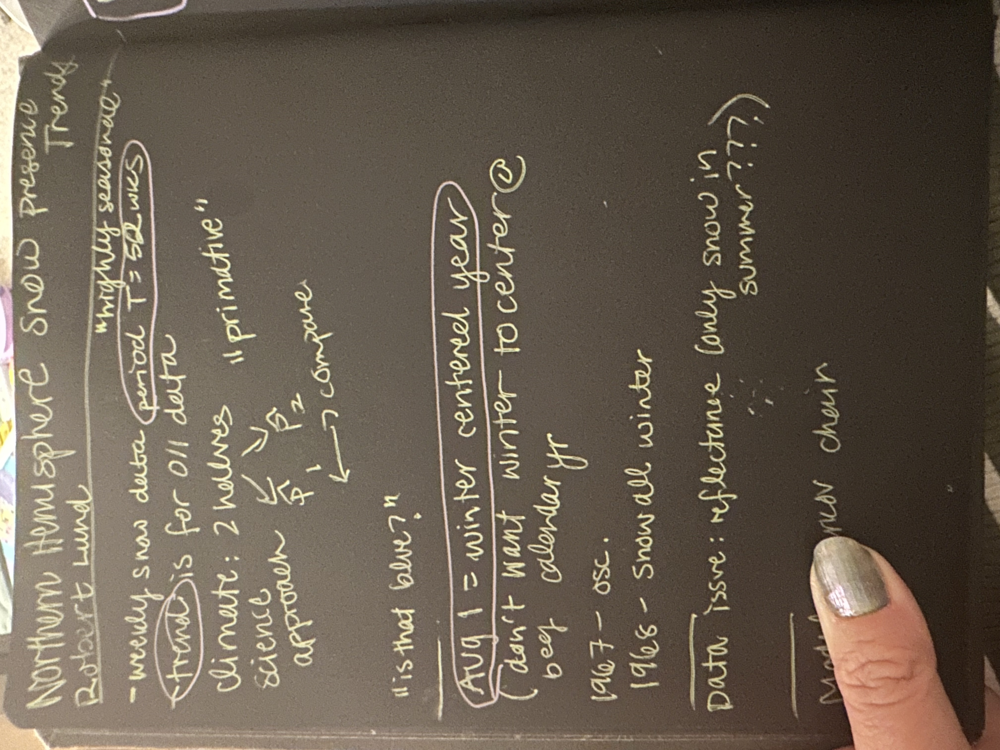
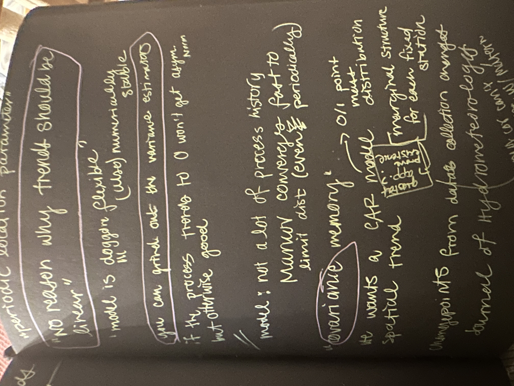
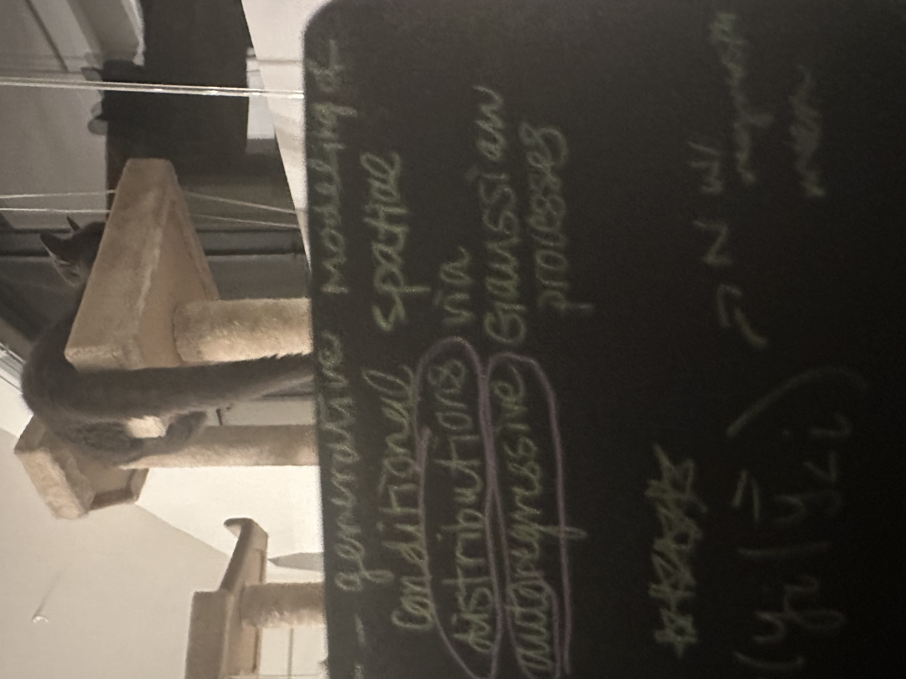
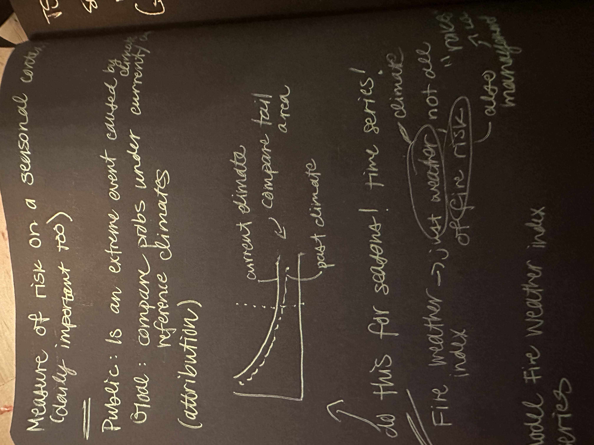
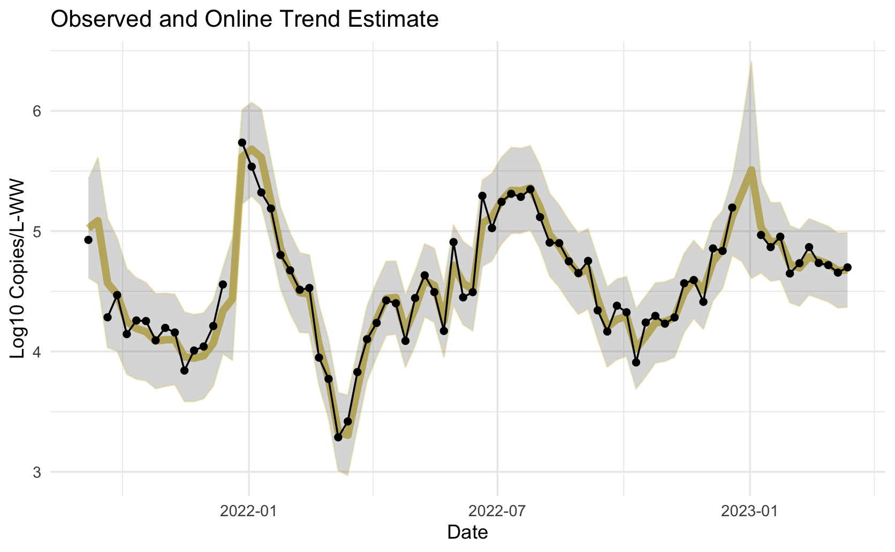
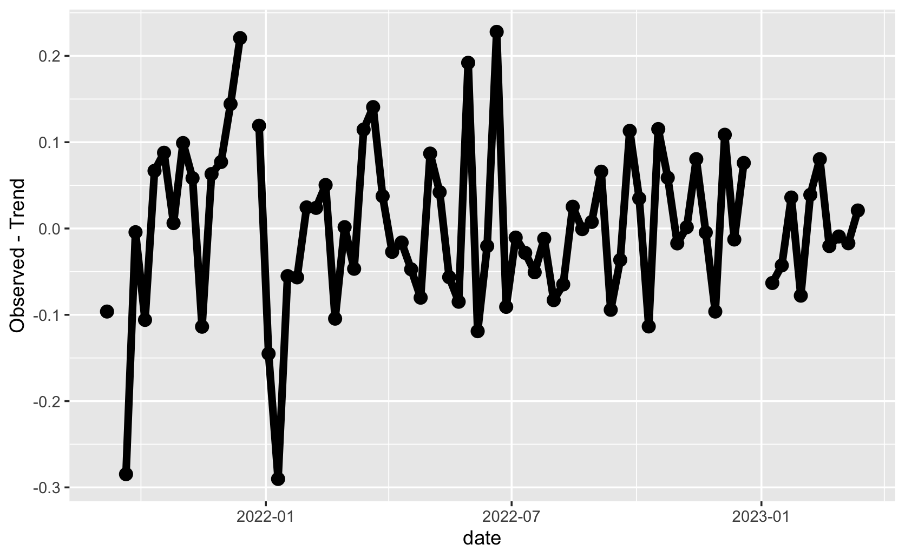
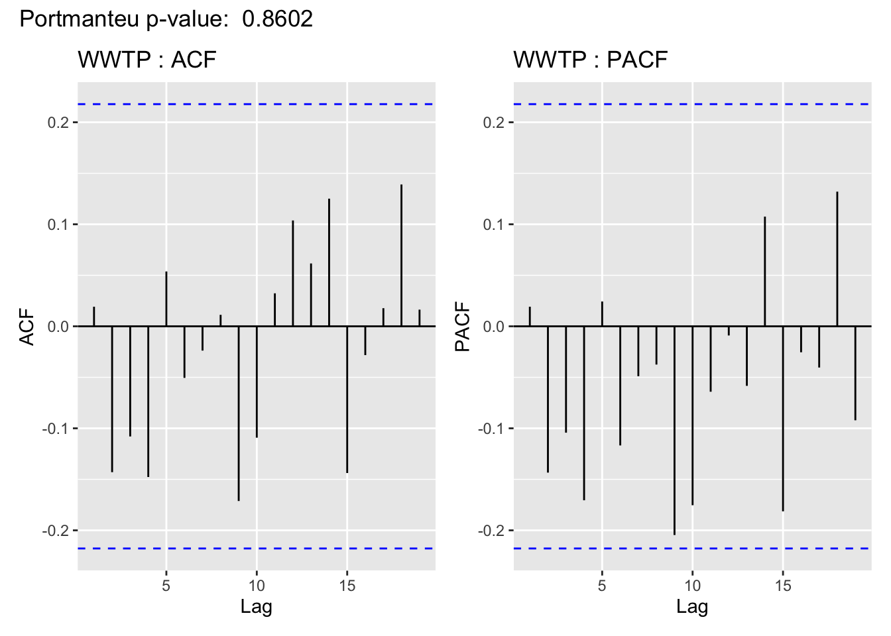

Code
## Simulate random walk w/ drift
## your code here \[ \newcommand\E{{\mathbb{E}}} \]
Conclusion:





If a process is trend stationary (nonstationary in the mean, but stationary in the variance), can we just subtract off the trend and get back a stationary time series?
Sometimes (assuming we are able to estimate it), and that’s called detrending.
Assuming trend stationarity (\(x_t = \mu_t + y_t\), where \(y_t\) is stationary), find an estimate \(\widehat{\mu}_t\) and compute
\[ \begin{align} \widehat{y_t} &= x_t - \widehat{\mu_t}\\ \text{Estimated Stationary process} &= \text{Data - trend estimate} \end{align} \] Note: Does \(y_t\) remind you of anything from regression?
Can we make the time series stationary by subtracting off the trend?

Does this time series appear stationary? In the mean, yes.

Have we captured the temporal structure in the time series? Yes (note: we will learn about ACF hypothesis tests/p-values during the “time series data analysis process”)

Use Lecture5Template.qmd
Use Lecture5Template.qmd
Consider the trend stationary model (\(y_t\) is stationary). \[ x_t = \mu_t + y_t \] We saw how to estimate a fixed trend using a linear regression for the mean (\(\mu_t = \beta_0 + \beta_1t\))
We then subtract off the estimate of the trend (detrend), \(\widehat{\mu_t}\) so that we are working with a stationary time series:
\[ \widehat{y_t} = x_t - \widehat{\mu_t} \]
What if the trend was not fixed? (dependent on \(t\) beyond just “\(t\) as a constant”)
Change the model for the mean to incorporate a stochastic component (random walk with drift):
\[ \mu_t = \delta + \mu_{t-1} + w_t \] Where \(w_t\) is white noise independent of \(y_t\).
Is \(\mu_t\) stationary? No (it’s a random walk, nonstationary in both mean and covariance)
Since the stochastic component depends on just one past time point, consider the series \(x_t - x_{t-1}\).
This series is called the differenced series and the process is called differencing.
\[ \begin{align} x_{t} - x_{t-1} &= (\mu_t + y_t) - (\mu_{t-1} - y_{t-1})\\ &= (\delta + \mu_{t-1} + w_t + y_t) - (\mu_{t-1} - y_{t-1})\\ & = \delta + w_t + y_t - y_{t-1} \end{align} \] Need to compute mean function \(\E(x_t - x_{t-1}\) and autocovariance function \(cov(x_t - x_{t-1}, x_s- x_{s-1})\) and check if they do not depend on \(t\) (mean) and just depend on the lag \(h = s-t\).
…But the answer is we do get a stationary series!
## Simulate random walk w/ drift
## your code here diff function to difference the simulated series. Plot the result.# your code here# your code here# your code hereCompare the Acfs of the differenced and detrended salmon series. What do you notice?
# your code hereWe’ve seen three explicity ways of modeling a trend (moving average (hw 1), and regression with time and random walk).
How else could we model a trend?
tsplot(soi, col=4)
lines(ksmooth(time(soi), soi, "normal", bandwidth=1), lwd=2, col=6)
par(fig = c(.65, 1, .75, 1), new = TRUE) # the insert
curve(dnorm, -3, 3, xaxt='n', yaxt='n', ann=FALSE)